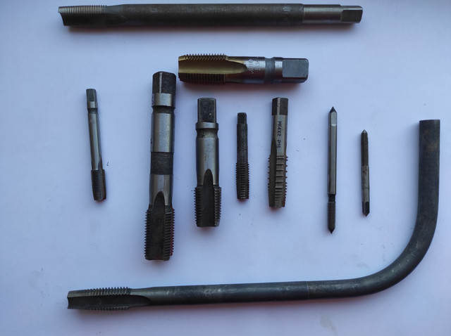

Мітчики гайковіМетчики гаечные
Мітчик гайковий М 8х0.75 ЛИЗ HSS H1 квадрат 145х16 (5х5х6.5 мм) z=3Метчик гаечный М 8х0.75 ЛИЗ HSS H1 квадрат 145х16 (5х5х6.5 мм) z=3
ОписОписание
Мітчик гайковий М 8х0.75 ЛИЗ HSS H1 квадрат 145х16 (5х5х6.5 мм) z=3 — професійний металорізальний інструмент для нарізання різьби в гайках і наскрізних отворах із довгою забірною частиною. Основні параметри: різьба M8×0.75 та кількість зубів z3. Виготовлено з матеріалу швидкорізальна сталь HSS, що забезпечує стійкість різальної кромки при обробці сталей та кольорових металів. В наявності 51 шт. на складі у Харкові. Ціна 120 грн без ПДВ. Опт і роздріб, відправлення по всій Україні. Замовлення від 2 000 грн.Метчик гаечный М 8х0.75 ЛИЗ HSS H1 квадрат 145х16 (5х5х6.5 мм) z=3 — профессиональный металлорежущий инструмент для нарезания резьбы в гайках и сквозных отверстиях с длинной заборной частью. Основные параметры: резьба M8×0.75 и число зубьев z3. Изготовлен из материала быстрорежущая сталь HSS, что обеспечивает стойкость режущей кромки при обработке сталей и цветных металлов. В наличии 51 шт. на складе в Харькове. Цена 120 грн без НДС. Опт и розница, отправка по всей Украине. Заказ от 2 000 грн.
ХарактеристикиХарактеристики
| Тип інструментуТип инструмента | Мітчик гайковийМетчик гаечный |
|---|---|
| КатегоріяКатегория | Мітчики гайковіМетчики гаечные |
| РізьбаРезьба | M8×0.75M8×0.75 |
| Крок різьбиШаг резьбы | 0.75 мм0.75 мм |
| Кількість зубів zКоличество зубьев z | 33 |
| МатеріалМатериал | HSSHSS |
| Напрямок різьбиНаправление резьбы | праваправая |
| СтанСостояние | новийновый |
| Код товаруКод товара | FLK-02794FLK-02794 |
| НаявністьНаличие | 51 шт.51 шт. |